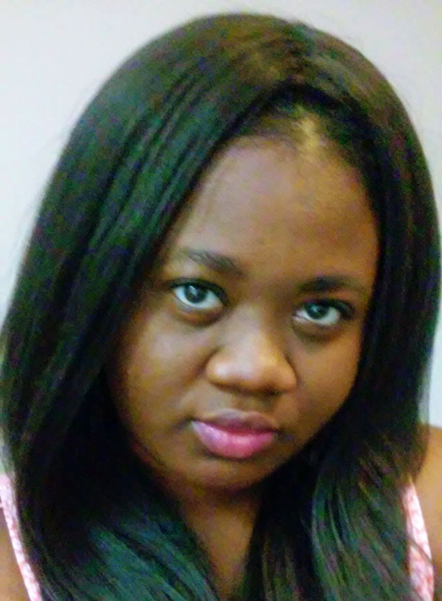

About Me

Hello! I am Oluwatoyin, but I go by Toyin. I am a calm, and reserved person who loves a good laugh. I tend to wonder and sometimes worry about what the future holds. I want to be happy in life and enjoy everything I do. I understand that I can't always get everything I want. But I am willing to try to get as much as I can.
I pretend not to care what people think of me when I actually do. I feel like people misunderstand me just because they don't know me. I hope people get to know me before they judge me. And I hope and dream that I never lose focus of my purpose in life.